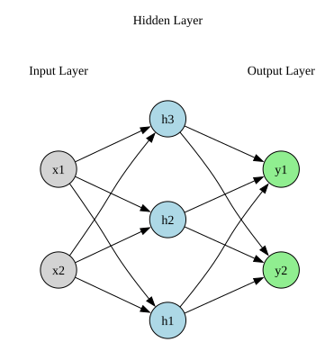

import pandas as pd
import torch
import torch.nn as nn
import torch.optim as optim
import matplotlib.pyplot as plt
import graphviz
from graphviz import Digraph
from IPython.display import display, MarkdownSimple Feedforward Neural Network
Packages
Introduction
In this notebook, we explore one full forward pass of a simple feedforward neural network (FNN). The network architecture consists of:
- \(D\) input neurons
- 1 hidden layer with \(M\) neurons and tanh activation
- \(N\) output neurons (no activation, suitable for regression)
We manually specify the weights, biases, and learning rate.
Neural Network Setup
We consider a simple feedforward neural network with \(D\) input neurons, 1 hidden layer with \(M\) neurons, and \(N\) output neurons.
Input Vector
The input is a \(D\)-dimensional column vector:
\[ x \in \mathbb{R}^D, \quad x = \begin{bmatrix} x_{1} \\ x_{2} \\ \vdots \\ x_{D} \end{bmatrix} \]
Output Layer
The output is:
\[ y = W^{(2)} h + b^{(2)} \]
Where: - \(W^{(2)} \in \mathbb{R}^{N \times M} \quad \text{(hidden-to-output weights)}\) - \(b^{(2)} \in \mathbb{R}^{N} \quad \text{(output bias)}\) - \(y \in \mathbb{R}^{N} \quad \text{(output vector)}\)
Explicitly, as a column vector:
\[ y = \begin{bmatrix} y_{1} \\ y_{2} \\ \vdots \\ y_{N} \end{bmatrix} \]
Target Vector
The target output vector is defined as:
\[ y^{\text{target}} \in \mathbb{R}^{N}, \quad y^{\text{target}} = \begin{bmatrix} y_{1}^{\text{target}} \\ y_{2}^{\text{target}} \\ \vdots \\ y_{N}^{\text{target}} \end{bmatrix} \]
Loss Function
We use the sum of squared errors (with factor \(\tfrac{1}{2}\)):
\[ L = \tfrac{1}{2} \left\| y - y^{\text{target}} \right\|^2 = \tfrac{1}{2} \sum_{i=1}^{N} (y_i - y_i^{\text{target}})^2 \]
Diagram
The network can be represented diagramatically. For simplicity assume \(D=2\), \(M=3\) and \(N=2\):
def draw_neural_net():
dot = Digraph(format='png')
dot.attr(rankdir='LR', nodesep='1.0')
# Input layer
input_nodes = ['x1', 'x2']
for node in input_nodes:
dot.node(node, shape='circle', style='filled', fillcolor='lightgray')
# Hidden layer
hidden_nodes = ['h1', 'h2', 'h3']
for node in hidden_nodes:
dot.node(node, shape='circle', style='filled', fillcolor='lightblue')
# Output layer
output_nodes = ['y1', 'y2']
for node in output_nodes:
dot.node(node, shape='circle', style='filled', fillcolor='lightgreen')
# Add a subgraph for each layer to group and rank nodes
with dot.subgraph() as s:
s.attr(rank='same')
s.node('input_label', label='Input Layer', shape='plaintext')
s.edge('input_label', 'x1', style='invis')
s.edge('input_label', 'x2', style='invis')
with dot.subgraph() as s:
s.attr(rank='same')
s.node('hidden_label', label='Hidden Layer', shape='plaintext')
s.edge('hidden_label', 'h1', style='invis')
s.edge('hidden_label', 'h2', style='invis')
s.edge('hidden_label', 'h3', style='invis')
with dot.subgraph() as s:
s.attr(rank='same')
s.node('output_label', label='Output Layer', shape='plaintext')
s.edge('output_label', 'y1', style='invis')
s.edge('output_label', 'y2', style='invis')
# Connect input to hidden
for i_node in input_nodes:
for h_node in hidden_nodes:
dot.edge(i_node, h_node)
# Connect hidden to output
for h_node in hidden_nodes:
for o_node in output_nodes:
dot.edge(h_node, o_node)
return dot
# Display the diagram inline
display(draw_neural_net())
Backpropagation Equations
We now compute the backpropagation equations:
Backpropagate to Output Layer
\[ \frac{\partial L}{\partial y} = y - y^{\text{target}} = e \in \mathbb{R}^{N} \]
Gradients for Output Layer Parameters
Weights: \[ \frac{\partial L}{\partial W^{(2)}} = \frac{\partial L}{\partial y}\ h^\top = e\, h^\top \quad \in \mathbb{R}^{N \times M} \]
Biases: \[ \frac{\partial L}{\partial b^{(2)}} = \left(\frac{\partial y}{\partial b^{(2)}}\right)^\top\frac{\partial L}{\partial y} = e \quad \in \mathbb{R}^{N} \]
Backpropagate to Hidden Layer
Gradient w.r.t. hidden activations: \[ \frac{\partial L}{\partial h} = \left(\frac{\partial y}{\partial h}\right)^\top\frac{\partial L}{\partial y} = (W^{(2)})^\top e \quad \in \mathbb{R}^{M} \]
Pre-activation gradient: \[ \delta^{(1)} := \frac{\partial L}{\partial z^{(1)}} = \left(\frac{\partial h}{\partial z^{(1)}}\right)^\top\frac{\partial L}{\partial h} = \phi'\!\left(z^{(1)}\right) \odot \left(\frac{\partial L}{\partial h}\right) = \phi'\!\left(z^{(1)}\right) \odot\ (W^{(2)})^\top e \quad \in \mathbb{R}^{M} \]
If \(\phi = \tanh\), then \(\phi'(z^{(1)}) = 1 - h \odot h\).
Gradients for Hidden Layer Parameters
Input-to-hidden weights: \[ \frac{\partial L}{\partial W^{(1)}} = \frac{\partial L}{\partial z^{(1)}}\ x^\top = \delta^{(1)}\, x^\top \quad \in \mathbb{R}^{M \times D} \]
Hidden bias: \[ \frac{\partial L}{\partial b^{(1)}} = \left(\frac{\partial z^{(1)}}{\partial b^{(1)}}\right)^\top\frac{\partial L}{\partial z^{(1)}} = \delta^{(1)} \quad \in \mathbb{R}^{M} \]
Update Equations
After computing the gradients of the loss with respect to all parameters, we update the weights and biases using gradient descent with learning rate \(\eta\):
Output layer weights and biases:
\[ W^{(2)} \leftarrow W^{(2)} - \eta \cdot \frac{\partial L}{\partial W^{(2)}} \]
\[ b^{(2)} \leftarrow b^{(2)} - \eta \cdot \frac{\partial L}{\partial b^{(2)}} \]
Hidden layer weights and biases:
\[ W^{(1)} \leftarrow W^{(1)} - \eta \cdot \frac{\partial L}{\partial W^{(1)}} \]
\[ b^{(1)} \leftarrow b^{(1)} - \eta \cdot \frac{\partial L}{\partial b^{(1)}} \]
Initializing the Neural Network
We now initialize the (feedforward) neural network and choose a learning rate. Again, for simplicity, we assume \(D=2\), \(M=3\) and \(N=2\):
Input
The input vector is:
\[ x = \begin{bmatrix} 1.0 \\ 2.0 \end{bmatrix} \]
Target
The target output vector is defined in general as:
\[ y^{\text{target}} = \begin{bmatrix} x_1^2 + x_2^2 \\ x_1 \cdot x_2 \end{bmatrix} \]
so given the input vector \(x\) we have that:
\[ y^{\text{target}} = \begin{bmatrix} 1.0 \\ 0.0 \end{bmatrix} \]
Parameters
Input-to-hidden weights:
\[ W^{(1)} = \begin{bmatrix} 0.5 & -0.2 \\ -0.3 & 0.4 \\ 0.1 & 0.2 \end{bmatrix} \]
Hidden bias:
\[ b^{(1)} = \begin{bmatrix} 0.0 \\ 0.0 \\ 0.0 \end{bmatrix} \]
Hidden-to-output weights:
\[ W^{(2)} = \begin{bmatrix} 0.2 & -0.1 & 0.3 \\ 0.4 & 0.3 & -0.2 \end{bmatrix} \]
Output bias:
\[ b^{(2)} = \begin{bmatrix} 0.0 \\ 0.0 \end{bmatrix} \]
Learning Rate
We use a learning rate of:
\[ \eta = 0.01 \]
Running the Neural Network For One Iteration
We now run the neural network for a single iteration.
# use double precision for neat numeric agreement
torch.set_default_dtype(torch.float64)# number of input neurons, hidden neurons and output neurons
D, M, N = 2, 3, 2
# learning rate
eta = 0.01# input
x = torch.tensor([1.0, 2.0])# target function y_target = [x1^2 + x2^2, x1*x2]
y_target = torch.tensor([x[0]**2 + x[1]**2, x[0]*x[1]])# parameters
# requires_grad=True tells pytorch to track oprations on this tensor so as to later be able to compute gradients
W1 = torch.tensor([[ 0.5, -0.2],
[-0.3, 0.4],
[ 0.1, 0.2]], requires_grad=True)
b1 = torch.tensor([0.0, 0.0, 0.0], requires_grad=True)
W2 = torch.tensor([[ 0.2, -0.1, 0.3],
[ 0.4, 0.3, -0.2]], requires_grad=True)
b2 = torch.tensor([0.0, 0.0], requires_grad=True)# keep copies of initial params for manual update
W1_0, b1_0, W2_0, b2_0 = W1.detach().clone(), b1.detach().clone(), W2.detach().clone(), b2.detach().clone()# forward pass
# z1 = W1 x + b1 ; h = tanh(z1) ; y = W2 h + b2
z1 = W1 @ x + b1
h = torch.tanh(z1)
y = W2 @ h + b2# loss: L = 0.5 * || y - y_target ||^2
e = y - y_target
L = 0.5 * torch.sum(e**2)print("Forward results:")
print("z1:", z1)
print("h :", h)
print("y :", y)
print("y_target :", y_target)
print("Loss L:", L.item())Forward results:
z1: tensor([0.1000, 0.5000, 0.5000], grad_fn=<AddBackward0>)
h : tensor([0.0997, 0.4621, 0.4621], grad_fn=<TanhBackward0>)
y : tensor([0.1124, 0.0861], grad_fn=<AddBackward0>)
y_target : tensor([5., 2.])
Loss L: 13.776073861781848# apply the chain rule to compute the gradient of L with respect to every tensor in the graph that has requires_grad=True
# stores those gradients in the .grad attribute of each such tensor
L.backward()# store the gradients of the parameters computed by pytorch
gr_W2_autograd = W2.grad.clone()
gr_b2_autograd = b2.grad.clone()
gr_W1_autograd = W1.grad.clone()
gr_b1_autograd = b1.grad.clone()print("\nAutograd gradients:")
print("dL/dW2:\n", gr_W2_autograd)
print("dL/db2:\n", gr_b2_autograd)
print("dL/dW1:\n", gr_W1_autograd)
print("dL/db1:\n", gr_b1_autograd)
Autograd gradients:
dL/dW1:
tensor([[-1.7258, -3.4516],
[-0.0672, -0.1343],
[-0.8521, -1.7042]])
dL/db1:
tensor([-1.7258, -0.0672, -0.8521])
dL/dW2:
tensor([[-0.4871, -2.2587, -2.2587],
[-0.1908, -0.8845, -0.8845]])
dL/db2:
tensor([-4.8876, -1.9139])# manually compute the gradients
# e = y - t
# dL/dW2 = e h^T
# dL/db2 = e
# dL/dh = W2^T e
# delta1 = (dL/dz1) = (1 - h ⊙ h) ⊙ (dL/dh)
# dL/dW1 = delta1 x^T
# dL/db1 = delta1
gr_W2_manual = torch.outer(e, h)
gr_b2_manual = e.clone()
dL_dh = W2_0.T @ e
delta1 = (1.0 - h*h) * dL_dh
gr_W1_manual = torch.outer(delta1, x)
gr_b1_manual = delta1.clone()print("\nManual gradients:")
print("dL/dW1:\n", gr_W1_manual)
print("dL/db1:\n", gr_b1_manual)
print("dL/dW2:\n", gr_W2_manual)
print("dL/db2:\n", gr_b2_manual)
Manual gradients:
dL/dW1:
tensor([[-1.7258, -3.4516],
[-0.0672, -0.1343],
[-0.8521, -1.7042]], grad_fn=<MulBackward0>)
dL/db1:
tensor([-1.7258, -0.0672, -0.8521], grad_fn=<CloneBackward0>)
dL/dW2:
tensor([[-0.4871, -2.2587, -2.2587],
[-0.1908, -0.8845, -0.8845]], grad_fn=<MulBackward0>)
dL/db2:
tensor([-4.8876, -1.9139], grad_fn=<CloneBackward0>)# function to check equality of gradients
def chk(name, a, b, tol=1e-12):
ok = torch.allclose(a, b, atol=tol, rtol=0)
print(f"{name}: match = {ok}")
if not ok:
print(" autograd:\n", a)
print(" manual:\n", b)print("\nGradient checks (autograd vs manual):")
chk("dL/dW2", gr_W2_autograd, gr_W2_manual)
chk("dL/db2", gr_b2_autograd, gr_b2_manual)
chk("dL/dW1", gr_W1_autograd, gr_W1_manual)
chk("dL/db1", gr_b1_autograd, gr_b1_manual)
Gradient checks (autograd vs manual):
dL/dW2: match = True
dL/db2: match = True
dL/dW1: match = True
dL/db1: match = True# update parameters using pytorch
with torch.no_grad():
W2_updated = W2 - eta * gr_W2_autograd
b2_updated = b2 - eta * gr_b2_autograd
W1_updated = W1 - eta * gr_W1_autograd
b1_updated = b1 - eta * gr_b1_autograd# manually update parameters
W2_manual_upd = W2_0 - eta * gr_W2_manual
b2_manual_upd = b2_0 - eta * gr_b2_manual
W1_manual_upd = W1_0 - eta * gr_W1_manual
b1_manual_upd = b1_0 - eta * gr_b1_manualprint("\nUpdate checks (torch.no_grad vs manual):")
chk("W1", W1_updated, W1_manual_upd)
chk("b1", b1_updated, b1_manual_upd)
chk("W2", W2_updated, W2_manual_upd)
chk("b2", b2_updated, b2_manual_upd)
Update checks (torch.no_grad vs manual):
W1: match = True
b1: match = True
W2: match = True
b2: match = Trueprint("\nNew parameters after one GD step (should match):")
print("W1 (new):\n", W1_updated)
print("b1 (new):\n", b1_updated)
print("W2 (new):\n", W2_updated)
print("b2 (new):\n", b2_updated)
New parameters after one GD step (should match):
W1 (new):
tensor([[ 0.5173, -0.1655],
[-0.2993, 0.4013],
[ 0.1085, 0.2170]])
b1 (new):
tensor([0.0173, 0.0007, 0.0085])
W2 (new):
tensor([[ 0.2049, -0.0774, 0.3226],
[ 0.4019, 0.3088, -0.1912]])
b2 (new):
tensor([0.0489, 0.0191])